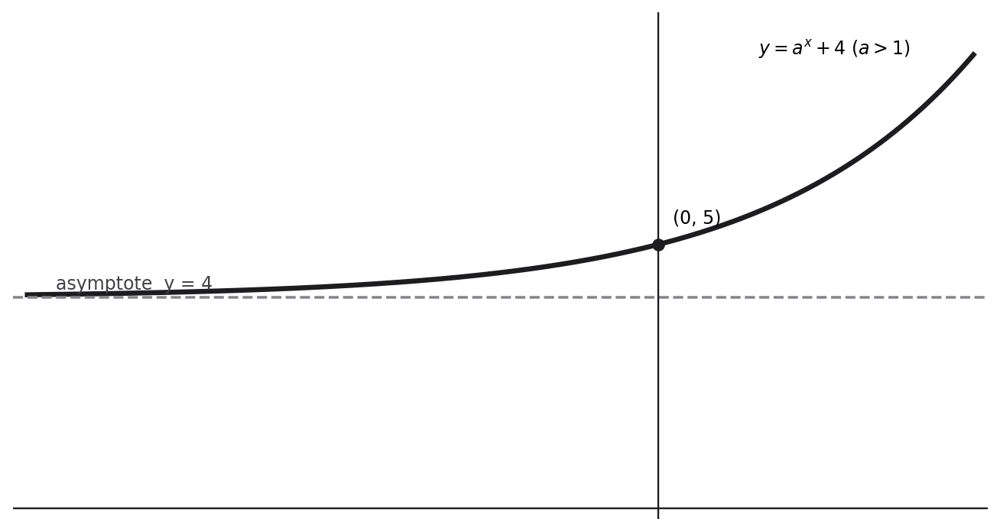

(a) Sketch the curve with equation \(y=a^x+4\), where \(a\) is a positive constant greater than 1. On your sketch, show the coordinates of the point of intersection of the curve with the \(y\)-axis and the equation of the asymptote of the curve. (3)
\(x\) \(y\) 2 0 2.3 0.3246 2.6 0.8629 2.9 1.6643 3.2 2.7896 3.5 4.3137 The table shows corresponding values of \(x\) and \(y\) for \(y=2^x-2x\), with the values of \(y\) given to 4 decimal places as appropriate. Using the trapezium rule with all the values of \(y\) in the given table, (b) obtain an estimate for \(\int_2^{3.5}(2^x-2x)\,dx\), giving your answer to 2 decimal places. (3)
(c) Using your answer to part (b) and making your method clear, estimate (i) \(\int_2^{3.5}(2^x+2x)\,dx\), (ii) \(\int_2^{3.5}(2^{x+1}-4x)\,dx\). (3)
Status: Not covered in the lesson — official-reference reconstruction below.
[9 marks]
Strategy and why. Start from the standard increasing exponential and apply a vertical translation by 4. Compute the intercept algebraically and move the asymptote by the same translation. A valid sketch must show shape, labelled intercept, and labelled asymptote.
Formula, definition or identity before substitution. For \(a>1\), \(a^x>0\), \(a^0=1\), and \(a^x\to0^+\) as \(x\to-\infty\). Adding 4 shifts every y-value and the horizontal asymptote upward by 4.
Full source-specific derivation. At \(x=0\), \[y=a^0+4=1+4=5,\] so the curve crosses the y-axis at \(\boxed{(0,5)}\). As \(x\to-\infty\), \(a^x\to0^+\), hence \(y\to4^+\). The horizontal asymptote is therefore \(\boxed{y=4}\). Draw an increasing curve always above that line, approaching it on the left and rising rapidly to the right.
Diagnosis and why the rejected route fails. Drawing the base curve with asymptote \(y=0\) fails because the +4 has not been applied geometrically. Writing only an intercept value 5 without coordinates misses a stated presentation requirement. The lesson supplies no learner attempt here because the question was blank.
Check back and interpretation. The point \((0,5)\) lies one unit above the asymptote, matching \(a^0=1\). Because \(a^x\) is always positive, the curve can never cross \(y=4\), which checks the relative placement.
Recognition trigger. For translated exponentials \(y=a^x+c\), immediately label asymptote \(y=c\) and intercept \((0,1+c)\), then use whether \(a>1\) or \(0<a<1\) to choose increasing or decreasing shape.

Strategy and why. Apply the composite trapezium rule using both endpoints once and every interior ordinate twice. The instruction all the values is a direct cue to include all six y-values; the equal x-spacing supplies the width.
Formula, definition or identity before substitution. For ordinates \(y_0,\ldots,y_5\) at spacing \(h\), use \(\frac h2[y_0+y_5+2(y_1+y_2+y_3+y_4)]\). Here \(h=(3.5-2)/5=0.3\).
Full source-specific derivation. Substitute exactly as tabulated: \[\frac{0.3}{2}\{0+4.3137+2(0.3246+0.8629+1.6643+2.7896)\}.\] The interior sum is \(5.6414\), so the bracket is \(4.3137+11.2828=15.5965\). Multiplication by \(0.15\) gives \(2.339475\). To two decimal places, \[\boxed{\int_2^{3.5}(2^x-2x)\,dx\approx2.34}.\]
Diagnosis and why the rejected route fails. A common failure is to double an endpoint, omit an interior ordinate, or use the number of ordinates rather than the five intervals when finding \(h\). Repeated calculator integration also ignores the explicit trapezium-rule command. No lesson-specific mistake is claimed because this work was deferred.
Check back and interpretation. The integrand values are non-negative over the table, so a positive estimate is expected. The average height is roughly \(2.34/1.5=1.56\), which lies plausibly among the listed ordinates and below the rapidly rising endpoint.
Recognition trigger. For a trapezium table, count intervals, not data points; write the endpoint-plus-double-interior bracket before typing numbers; then round only the final estimate to the requested precision.
Strategy and why. Rewrite each requested integrand in terms of the part-(b) integrand rather than applying the trapezium rule again. The word using directs an algebraic reuse: add a simple exact integral for part (i), and factor out 2 for part (ii).
Formula, definition or identity before substitution. Use linearity: \(\int(f+g)=\int f+\int g\), and \(\int cf=c\int f\). Here \(2^x+2x=(2^x-2x)+4x\), while \(2^{x+1}-4x=2(2^x-2x)\).
Full source-specific derivation. For (i), \[\int_2^{3.5}(2^x+2x)\,dx\approx I+\int_2^{3.5}4x\,dx.\] Now \([2x^2]_2^{3.5}=2(12.25-4)=16.5\), so the estimate is \(2.34+16.5=\boxed{18.84}\). For (ii), \[\int_2^{3.5}(2^{x+1}-4x)\,dx=2I\approx2(2.34)=\boxed{4.68}.\]
Diagnosis and why the rejected route fails. Repeating the trapezium rule from the same rounded table misses the intended hence structure and can introduce a second approximation path. Treating \(2^{x+1}\) as \(2^x+1\) also fails; exponent law gives \(2^{x+1}=2\cdot2^x\).
Check back and interpretation. Differentiate the exact antiderivative \(2x^2\) to recover \(4x\). For part (ii), compare every term after doubling: \(2(2^x-2x)=2^{x+1}-4x\). Both checks validate the transformations.
Recognition trigger. When later integrals are close variants of an earlier approximated integrand, subtract the expressions symbolically. If the difference is elementary or a constant multiple, reuse the earlier estimate instead of recomputing numerically.